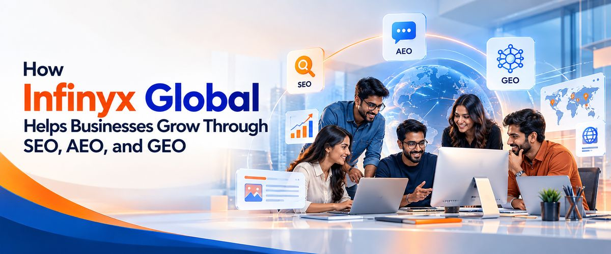

The way people search for information online is changing rapidly. Traditional search engines like Google remain important, but users are increasingly turning to AI-powered tools and answer engines to discover businesses, compare services, and find solutions to their problems.
For businesses, this creates a new challenge: How do you make sure your brand gets discovered across traditional search engines, answer engines, and generative AI platforms?
This is where Search Engine Optimization (SEO), Answer Engine Optimization (AEO), and Generative Engine Optimization (GEO) come into play.
Although these three strategies have different goals, they work best when combined. At Infinyx Global, we provide SEO, AEO, and GEO services across the globe, helping businesses strengthen their online visibility, reach relevant audiences, and create more opportunities for sustainable growth.
In this guide, we explain the differences between SEO, AEO, and GEO, why they matter, and how to decide which strategy is right for your business.
What Is SEO (Search Engine Optimization)?
Search Engine Optimization, commonly known as SEO, is the process of improving a website’s visibility in organic search engine results. The goal is to help search engines understand your website and present its pages to people searching for relevant information, products, or services.
For example, a business searching for an SEO Company in Bangalore may discover service providers through Google search results. A well-optimized website has a better opportunity to appear for relevant searches, attract qualified visitors, and generate enquiries.
SEO typically includes several important activities:
- Keyword research: Identifying the search terms your potential customers use.
- On-page SEO: Optimizing page titles, headings, meta descriptions, content, internal links, and URLs.
- Technical SEO: Improving website crawling, indexing, mobile usability, site speed, and overall technical performance.
- Content creation: Publishing useful blog posts, landing pages, service pages, and industry resources.
- Off-page SEO: Earning relevant backlinks and building your website’s authority.
- Performance monitoring: Tracking organic traffic, rankings, conversions, and other meaningful results.
Businesses looking for professional SEO Services in Bangalore should focus on more than rankings alone. An effective SEO strategy should connect search visibility with business outcomes, such as qualified leads, enquiries, and sales opportunities.
What Is AEO (Answer Engine Optimization)?
Answer Engine Optimization (AEO) focuses on making your content easy for search engines and answer-focused platforms to understand, extract, and present as direct answers to user questions.
Instead of searching only with short phrases, people increasingly ask complete questions, such as:
- Which digital marketing agency can help my business grow?
- How does B2B lead generation work?
- What is the difference between SEO and GEO?
- Which recruitment solutions are suitable for growing companies?
AEO helps businesses structure their content so that it clearly addresses these questions.
Important AEO practices include:
- Answering common customer questions directly and accurately.
- Using clear headings and logical content structures.
- Creating detailed FAQ sections where appropriate.
- Providing reliable, specific, and easy-to-understand information.
- Using structured data where relevant and supported.
- Demonstrating subject-matter expertise and maintaining consistent business information.
AEO can support visibility in featured snippets, answer-oriented search experiences, and other eligible search features. However, placement is determined by each platform, and no optimization strategy can guarantee that a page will be selected.
For businesses that want to become more discoverable when potential customers ask questions online, partnering with an experienced AEO Company in Bangalore can help establish a structured approach to answer-focused content.
What Is GEO (Generative Engine Optimization)?
Generative Engine Optimization (GEO) is the practice of improving how a brand and its content may be discovered, understood, and referenced by AI-powered search and generative answer systems.
People now use tools such as ChatGPT, Claude, Google’s AI search experiences, and other generative platforms to research products, compare service providers, and explore solutions. These systems may produce synthesized answers rather than presenting only a conventional list of links.
GEO aims to make your website and brand information useful, understandable, credible, and relevant to these systems.
Key GEO activities may include:
- Publishing original, informative, and well-supported content.
- Explaining services, products, and expertise clearly.
- Creating comprehensive pages that answer specific user needs.
- Maintaining consistent company information across credible online sources.
- Strengthening brand authority through relevant mentions and earned references.
- Improving website accessibility, crawlability, and content structure.
- Reviewing referral traffic, brand mentions, and available AI-search visibility indicators.
GEO is not simply about inserting AI-related keywords into a website. It involves building a credible online presence and publishing information that genuinely helps people and can be interpreted by generative systems.
It is important to remember that generative platforms use different systems and sources. Visibility cannot be guaranteed, and results may vary between platforms and queries.
SEO vs AEO vs GEO: What Are the Key Differences?
Although SEO, AEO, and GEO overlap, each has a different primary focus.
| Factor | SEO | AEO | GEO |
|---|---|---|---|
| Primary goal | Improve organic search visibility | Provide clear answers to user questions | Improve discoverability in generative AI experiences |
| Main focus | Rankings, relevant traffic, and conversions | Direct, structured answers | Useful content, brand understanding, and credible references |
| Content approach | Search-intent-focused pages and articles | Concise, direct answers supported by context | Comprehensive, clear, authoritative information |
| Technical focus | Crawling, indexing, speed, and site structure | Readable structures and relevant structured data | Crawlability, accessible content, and machine-readable information |
| Success indicators | Organic traffic, rankings, conversions | Eligible answer placements and relevant search visibility | AI referrals, brand mentions, citations where observable, and assisted conversions |
These are not three completely separate marketing disciplines. Strong technical SEO, high-quality content, and a trustworthy brand presence can support all three.
Which Strategy Does Your Business Need?
The answer depends on your business objectives, target audience, current website performance, and available resources.
1. Choose SEO if you need sustainable organic traffic
SEO is essential for businesses that want to attract people actively searching for their products or services.
It is particularly useful for B2B companies, professional service providers, technology businesses, recruitment firms, and organizations targeting specific industries or geographic markets.
If your website has limited search visibility, missing service pages, technical issues, or weak keyword targeting, start by establishing a strong SEO foundation.
2. Choose AEO if your customers search through questions
AEO is valuable when potential customers ask detailed questions before making a purchasing decision.
For example, a B2B buyer may want to understand pricing considerations, implementation timelines, service differences, or the benefits of a particular solution.
Well-structured service pages, helpful FAQs, comparison articles, and expert explanations can help address these needs.
3. Choose GEO if your audience uses AI-powered discovery
GEO becomes increasingly relevant when customers use generative AI tools to research providers, explore solutions, or create shortlists.
Businesses should focus on clear service descriptions, original insights, reliable information, and credible brand references. These practices can help AI systems better interpret the company’s expertise, although inclusion in AI-generated answers is never guaranteed.
4. Combine all three for a broader search strategy
For many businesses, the strongest long-term approach is to integrate SEO, AEO, and GEO instead of treating them as competing options.
SEO builds the foundation. AEO helps organize information around customer questions. GEO extends the strategy to generative discovery experiences.
Together, they can help businesses build a more comprehensive digital presence.
How Infinyx Global Helps Businesses Grow Through SEO, AEO, and GEO

At Infinyx Global, we understand that every business has different goals, audiences, and challenges. Our approach combines strategy, content, technology, and ongoing optimization to help businesses strengthen their online presence.
We provide SEO, AEO, and GEO services to businesses across the globe, supporting organizations that want to reach relevant audiences in local and international markets.
Our in-house team includes:
- Designers who develop user-friendly page layouts and engaging visual experiences.
- Developers who build website pages and implement technical improvements.
- Testers who check functionality, usability, and page performance.
- Content writers who create relevant, informative, search-focused content.
- Backlink specialists who work on relevant outreach and link-building opportunities.
Having these capabilities in-house helps us coordinate website development, content production, technical implementation, and promotion as part of a connected process.
Building Pages From Scratch and Optimizing Existing Websites
Your website should do more than look professional. It should help your audience understand your services, find the information they need, and take the next step.
If you are launching a new website or introducing a new service, our team can build pages from scratch with SEO-friendly structures in mind. This includes keyword research, page planning, headings, metadata, content, internal linking, technical requirements, and conversion-focused elements.
If you already have a website, we can review existing pages and identify opportunities to make them more search-friendly. Depending on the findings, this may involve rewriting content, improving page structure, resolving technical issues, enhancing internal links, adding relevant FAQs, and strengthening calls to action.
Once the pages are prepared, we begin the agreed optimization and promotion activities. This can include content publishing, technical improvements, relevant backlink outreach, indexing checks, performance monitoring, and ongoing refinement.
Our goal is to create pages that serve both search visibility and real users—not pages designed solely to repeat keywords.
Supporting Your Business Beyond Rankings
A successful digital growth strategy considers the complete customer journey. At Infinyx Global, we focus on helping businesses connect search visibility with meaningful business objectives.
We can help align website content with customer intent, improve service-page clarity, strengthen digital credibility, and identify opportunities to attract relevant enquiries.
We also recognize that SEO, AEO, and GEO evolve continuously. Our approach emphasizes ongoing analysis, useful content, technical quality, and adaptation to changing search experiences rather than promising guaranteed rankings or AI citations.
Whether you are a startup building your online presence or an established organization expanding into new markets, we can help develop an approach suited to your needs.
Conclusion
SEO, AEO, and GEO represent complementary approaches to online discovery. SEO helps businesses improve traditional organic search visibility, AEO focuses on answering user questions, and GEO addresses discoverability within generative AI experiences.
Rather than choosing only one, businesses should evaluate how these strategies can work together to reach customers across different search environments.
Infinyx Global brings together designers, developers, testers, content writers, and backlink specialists to help build new pages, optimize existing websites, and implement coordinated digital growth strategies.
If your business is ready to improve its online presence and reach audiences across global markets, connect with Infinyx Global to discuss an SEO, AEO, and GEO strategy tailored to your goals.
Infinyx Global — Your Growth Partner in the Digital World.